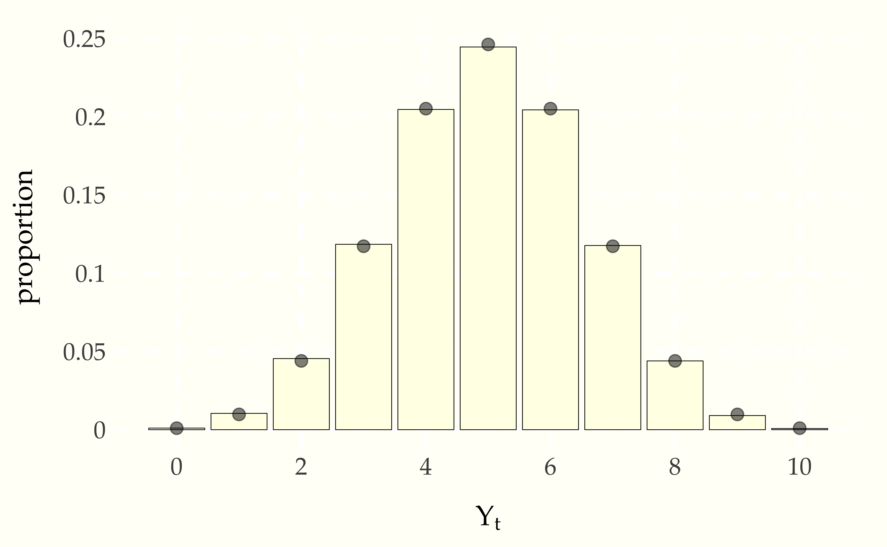
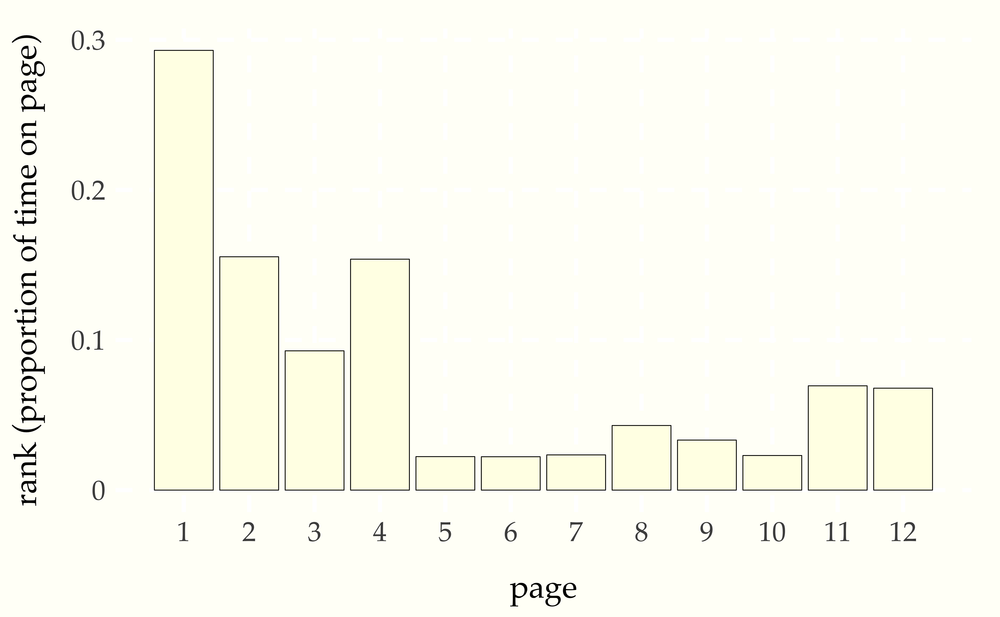

5 Finite-State Markov Chains
5.1 Random processes
A finite sequence of random variables is said to be a random vector. An infinite sequence
\[ Y = Y_1, Y_2, \ldots \]
of random variables is said to be a random process.87 We consider only discrete random processes where the set of indexes is the counting numbers \(1, 2, 3, \ldots\). Nevertheless, the set of indexes is infinite, so much of the approach to finite vectors has to be reworked. A trivial example is a sequence of independent Bernoulli trials in which each \(Y_t\) is drawn independently according to \(Y_t \sim \mbox{bernoulli}(\theta)\). A sequence of independent Bernoulli trials is called a Bernoulli process.
In this chapter, we will restrict attention to processes \(Y\) whose elements take on values \(Y_t \in 0:N\) or \(Y_t \in 1:N\) for some fixed \(N\).88 The choice of starting at 0 or 1 is a convention that varies by distribution. For example, Bernoulli and binomial variates may take on value zero, but categorical values take on values in \(1:N\). The Bernoulli process is finite in this sense because each \(Y_t\) takes on boolean values, so that \(Y_t \in 0:1\).
5.2 Finite-State Markov chains
A random process \(Y\) is said to be a Markov chain if each element is generated conditioned on only the previous element, so that
\[ p_{Y_{t + 1} \mid Y_1, \ldots, Y_t}(y_{t + 1} \mid y_1, \ldots, y_t) \ = \ p_{Y_{t + 1} \mid Y_t}(y_{t + 1} \mid y_t) \]
holds for all \(y_1, \ldots, y_{t + 1}\). In this chapter, we only consider Markov chains in which the \(Y_t\) are finite random variables taking on values \(Y_t \in 0:N\) or \(Y_t \in 1:N\), the range depending on the type of variable.89 We generalize in two later chapters, first to Markov chains taking on countably infinite values and then to ones with continous values.
The Bernoulli process discussed in the previous section is a trivial example of a finite Markov chain. Each value is generated independently, so that for all \(y_1, \ldots, y_{t+1}\), we have
\[ \begin{array}{rcl} p_{Y_{t+1} \mid Y_1, \ldots, Y_t}(y_{t+1} \mid y_1, \ldots, y_t) & = & p_{Y_{t+1} \mid Y_t}(y_{t+1} \mid y_t) \\[4pt] = \mbox{bernoulli}(y_{t+1} \mid \theta). \end{array} \]
5.3 Fish in the stream
Suppose a person is ice fishing for perch and pike, and notes that if they catch a perch, it is 95% likely that the next fish they catch is a perch, whereas if they catch a pike, it is 20% likely the next fish they catch is a pike.90 This is a thinly reskinned version of the classic exercise involving cars and trucks from Ross, S.M., 2014. Introduction to Probability Models. Tenth edition. Academic Press. Exercise 30, page 279. We’ll treat the sequence of fish types as a random process \(Y = Y_1, Y_2, \ldots\) with values
\[ Y_t \ = \ \begin{cases} 1 & \mbox{if fish $t$ is a pike, and} \\[4pt] 2 & \mbox{if fish $t$ is a perch.} \end{cases} \]
The sequence \(Y\) forms a Markov chain with transition probabilities
\[ \begin{array}{rcl} \mbox{Pr}[Y_{t + 1} = 1 \mid Y_t = 1] & = & 0.20 \\[4pt] \mbox{Pr}[Y_{t + 1} = 1 \mid Y_t = 2] & = & 0.05 \end{array} \]
The easiest way to visual a Markov chain with only a few states is as a state transition diagram. In the case of the pike and perch, the transition diagram is as follows.
Figure 5.1: State diagram for finite Markov chain generating sequences of fishes. The last fish observed determines the current state and the arrows indicate transition probabilities to the next fish observed.
Like all such transition graphs, the probabilities on the edges going out of a node must sum to one.
Let’s simulate some fishing. The approach is to generate the type of each fish in the sequence, then report the overall proportion of pike.91 With some sleight of hand here for compatiblity with Bernoulli variates and to facilitate computing proportions, we have recoded perch as having value 0 rather than 2. We will start with a random fish drawn according to \(\mbox{bernoulli(1/2)}\).
y[1] = bernoulli_rng(0.5)
for (t in 2:T)
y[t] = bernoulli_rng(y[t - 1] = 1 ? 0.2 : 0.05)
print 'simulated proportion of pike = ' sum(y) / MNow let’s assume the fish are really running, and run a few simulated chains until \(T = 10\,000\).
simulated proportion of pike = NA
simulated proportion of pike = NA
simulated proportion of pike = NA
simulated proportion of pike = NA
simulated proportion of pike = NAThe proportion of pike is roughly 0.06.
5.4 Ehrenfest’s Urns
Suppose we have two urns, with a total of \(N\) balls distributed between them. At each time step, a ball is chosen uniformly at random from among the balls in both urns and moved to the other urn.92 This model was originally introduced as an example of entropy and equilibrium in P. Ehrenfest and T. Ehrenfest. 1906. Über eine Aufgabe aus der Wahrscheinlichkeitsrechnung, die mit der kinetischen Deutung der Entropievermehrung zusammenhängt. Mathematisch-Naturwissenschaftliche Blätter No. 11 and 12.
The process defines a Markov chain \(Y\) where transitions are governed by
\[ p_{Y_{t+1} \mid Y_t}(y_{t+1} \mid y_t) \ = \ \begin{cases} \displaystyle \frac{y_t}{N} & \mbox{if } \ y_{t + 1} = y_t - 1, \ \mbox{and} \\[6pt] \displaystyle 1 - \frac{y_t}{N} & \mbox{if } \ y_{t + 1} = y_t + 1. \end{cases} \]
The transition probabilities make sure that the value of \(Y_t\) remains between 0 and \(N\). For example,
\[ \mbox{Pr}[Y_{t + 1} = 1 \mid Y_t = 0] = 1 \]
because \(1 - \frac{y_t}{N} = 1\). Similarly, if \(Y_t = N\), then \(Y_{t+1} = N - 1\).
What happens to the distibution of \(Y_t\) long term? It’s easy to
compute by simulation of a single long chain:93 We’ve used a function
borrowed from R here called table, defined by \[\mbox{table}(y, A,
B)[n] = \sum_{t=1}^T \mbox{I}[y_t = n]\] for \(n \in A:B\). For example, if \[y =
(0, 1, 2, 1, 1, 3, 2, 2, 1),\] then \[\mbox{table}(y, 0, 4) = (1, 4,
3, 1, 0),\] because there is one 0, four 1s, three 2s, a single 3, and
no 4s among the values of \(y\).
y[1] = floor(N / 2)
for (t in 2:T)
z[t] = bernoulli_rng(y[t - 1] / N)
y[t] = y[t - 1] + (z[t] ? -1 : +1)
p_Y_t_hat = table(y, 0, N) / TLet’s run that with \(N = 10\) and \(T = 100\,000\) and display the results as a bar plot.
Figure 5.2: Long-term distribution of number of balls in the first urn of the Ehrenfest model in which \(N\) balls are distributed between two urns, then at each time step, a ball is chosen uniformly at random move to the other urn. The simulation is based on total of \(T = 100\,000\) steps with \(N = 10\) balls, starting with 5 balls in the first urn. The points on the top of the bars are positioned at the mass defined by the binomial distribution, \(\mbox{binomial}(Y_t \mid 10, 0.5)\).
The distribution of \(Y_t\) values is the binomial distribution, as shown by the agreement between the points (the binomial probability mass function) and the bars (the empirical proportion \(Y_t\) spent in each state).94 In the Markov chain Monte Carlo chapter later in the book, we will see how to construct a Markov chain whose long-term frequency distribution matches any given target distribution.
5.5 Page Rank and the random surfer
Pagerank,95 Page, L., Brin, S., Motwani, R. and Winograd, T., 1999. The PageRank citation ranking: Bringing order to the web. Stanford InfoLab Technical Report. Section 2.5 Random Surfer Model. the innovation behind the original Google search engine ranking system, can be modeled in terms of a random web surfer whose behavior determines a Markov chain. The web is modeled as a set of pages, each of which has a set of outgoing links to other pages. When viewing a particular page, our random surfer chooses the next page to visit by
if the current page has outgoing links, then with probability \(\lambda\), choose the next page uniformly at random among the outgoing links,
otherwise (with probability \(1 - \lambda\)), choose the next page to visit uniformly at random among all web pages.
Translating this into the language of random variables, let \(Y = Y_1, Y_2, \ldots\) be the sequence of web pages visited. Our goal now is to define the transition function probabilistically so that we may simulate the random surfer. Let \(L_i \subseteq 1:N\) be the set of outgoing links from page \(i\); each page may have any number of outgoing links from 0 to \(N\).
The process \(Y\) is most easily described in terms of an auxiliary process \(Z = Z_1, Z_2, \ldots\) where \(Z_t\) represents
the decision whether to jump to a link from the current page. We define \(Z\) by setting \(Z_t = 0\) if the page \(Y_t\) has no outgoing links, and otherwise setting
\[ Z_t \sim \mbox{bernoulli}(\lambda). \]
If \(Z_t = 1\), we can generate \(Y_{t+1}\) uniformly from the links \(L_{Y_t}\) from page \(Y_t\),
\[ Y_{t + 1} \sim \mbox{uniform}\left( L_{Y_t} \right). \]
If \(Z_t = 0\), we simply choose a web page uniformly at random from among all \(N\) pages,
\[ Y_{t+1} \sim \mbox{uniform}(1:N). \]
This sequence is easy to simulate with L[n] denoting the outgoing
links from page n. We start from a page y[1] chosen uniformly at
random among all the pages. Then we just simulate subsequent pages
according to the process described above.
y[1] <- uniform_rng(1:N)
for (t in 2:T)
last_page = y[t - 1]
out_links = L[last_page]
z[t] <- empty(out_links) ? 0 : bernoulli_rng(lambda)
y[t] <- uniform(z[t] ? out_links : (1:N))Suppose we have the following graph.
Figure 5.3: A simplified web. Each node represents a web page and each edge is a directed link from one page to another web page.
We can simulate \(T = 100\,000\) page visits using the algorithm shown above and display the proportion of time spent on each page.
Figure 5.4: Proportion of time spent on each page by a random surfer taking \(T = 100\,000\) page views starting from a random page with a web structured as in the previous diagram.
Page 1 is the most central hub. Pages 5, 6, 7, and 10 have no links coming into them and can only be visited by random chance, so all should have the same chance of being visited by the random surfer. Pages 11 and 12 are symmetric, and indeed have the same probability. There is a slight difference between the views of page 9 and 10 in that it possible ot get to 9 from 7, but 10 is only visited by chance.